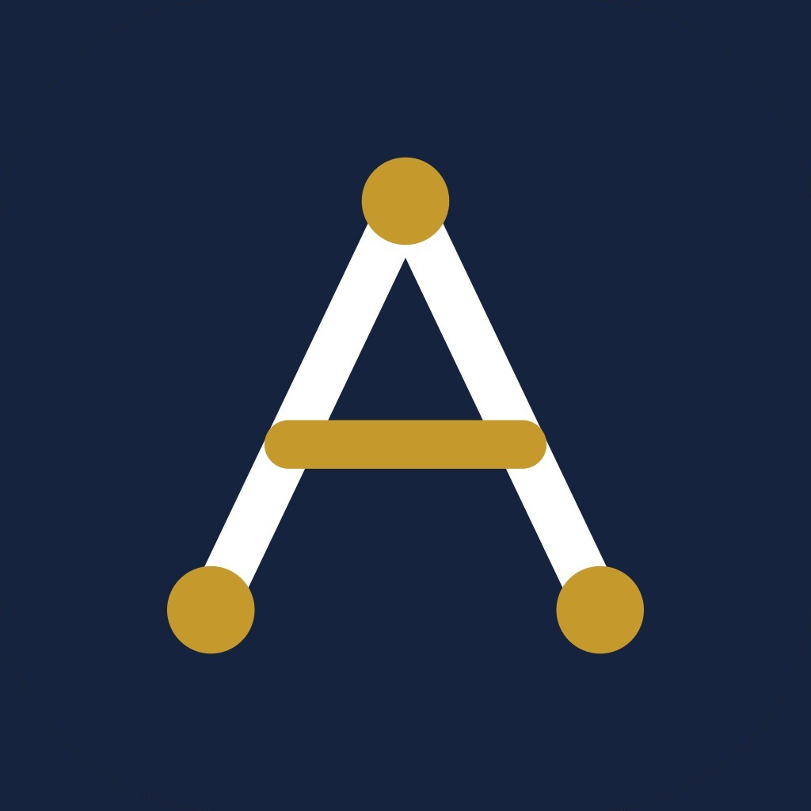

Arsiva Technology (Arsiva.tech) adalah ekosistem legal-tech dan kepatuhan Indonesia yang dibangun di atas enam pilar: praktik hukum, penstrukturan aset dan tokenisasi, kepatuhan ekspor (Certiva), R&D (Arsiva Labs), KYC/AML (Arsiva Shield), dan operasional kantor manajemen aset (VaultOS).
Where Law, Compliance & Technology Converge
● Pilot grup berjalan: 11 pengguna B2B (10 kantor notaris, 1 firma hukum)
Produk unggulan — lihat Certiva, mesin kepatuhan ekspor UMKM →
Bukan layanan terpisah yang harus disatukan sendiri oleh klien.
Firma hukum dengan model kerja bertahap dan sistem pay-per-case, bukan retainer. Cakupan: perpajakan, kepabeanan, litigasi, korporasi, dan family office — termasuk penelaahan implikasi UU PFII bagi klien — plus divisi tokenisasi yang didukung otomatisasi teknologi.
Konsultasi dan perancangan struktur RWA: Pra-RWA, manajemen aset, penstrukturan SPV/TSPV/Hold Co, serta navigasi regulasi OJK Sandbox dan perkembangan PFII. Menjawab pertanyaan pertama setiap pemilik aset: "Dari mana saya mulai, dan struktur apa yang tepat?"
Lihat Arsiva Enterprise →Kepatuhan hukum bagi eksportir UMKM, dipadukan dengan analitik data. Mesin pencarian hukum hibrida yang mengubah pertanyaan sehari-hari menjadi sitasi regulasi yang dapat diverifikasi, berjalan on-premise tanpa data keluar.
Halaman Certiva →KYC/AML terintegrasi yang patuh UU Pelindungan Data Pribadi: verifikasi ketat, data pribadi terlindungi. Tujuh prinsip desain — dari dasar pemrosesan (Pasal 20) dan retensi terkelola (Pasal 16(2)(g)) hingga pemberitahuan kegagalan pelindungan data tertulis paling lambat 3×24 jam (Pasal 46).
Divisi R&D internal: software development, integrasi AI, dan compliance engineering — menerjemahkan aturan menjadi alur kerja yang dapat dijalankan sistem dan diperiksa auditor.
Roadmap: LLM-assisted workflows dalam pengembangan.
OS otomatisasi untuk kantor manajemen aset: restrukturisasi korporasi, konsolidasi SPV, dan kesiapan RWA on-chain — termasuk pencatatan kewajiban pemberitahuan pengalihan data pribadi saat aksi korporasi (UU PDP Pasal 48).
Ilustrasi alur umum — bukan studi kasus klien tertentu.
Status hukum aset ditelaah; kerangka regulasi yang relevan (OJK, PFII, atau keduanya) dipetakan; Pra-RWA menyiapkan fondasi tokenisasi.
Struktur SPV/TSPV/Hold Co dirancang sesuai tujuan dan kerangka regulasi yang dipilih.
KYC/AML dan kepatuhan UU PDP diterapkan sejak awal, bukan sebagai tambalan di akhir.
Dokumen, entitas, konsolidasi, dan kewajiban pemberitahuan data dikelola dalam satu sistem, siap untuk tahap on-chain.
Pengalaman lapangan kembali menjadi bahan riset dan pengembangan produk.
OJK menyiapkan rancangan POJK tentang Penawaran Aset Ditokenisasi (emas, SBN, manfaat ekonomi properti, token ekosistem tertutup). Hingga September 2026: 236 sesi konsultasi sandbox terlaksana, 7 inovasi lulus uji coba; aturan diproyeksikan selesai tahun ini atau awal tahun depan.
Pusat Finansial Internasional Indonesia: ruang baru untuk family office dan trust, insentif fiskal, lembaga pengelola kawasan, penyelesaian sengketa komersial internasional, dan standar AML internasional (FATF). Regulasi turunan disiapkan paralel.
UU No. 27/2022 berlaku sejak diundangkan 17 Oktober 2022 (masa penyesuaian 2 tahun berakhir 17 Oktober 2024). PP 33/2026 diundangkan 16 Juli 2026, berlaku 16 Januari 2027. Lembaga pengawas (Badan PDP) masih dalam pembentukan; pengawasan transisi dijalankan Kemkomdigi.
Sumber: naskah resmi UU PDP, halaman DPR RI, dan pemberitaan kredibel (status per 12 Oktober 2026). Verifikasi ulang status terbaru sebelum keputusan bisnis.
Kepatuhan ekspor Indonesia tersebar di 13 regulasi inti dan 54 pasal — labirin bagi eksportir UMKM. Certiva menerjemahkan pertanyaan dalam bahasa sehari-hari menjadi sitasi regulasi yang dapat diverifikasi, dalam milidetik.
Snapshot internal 9 Okt 2026 (103 kueri tulisan tangan: 75 skenario berlabel dari 13 regulasi + 28 guardrail). Dapat direproduksi, bukan sertifikasi oleh otoritas mana pun. Hasil dapat berfluktuasi ±1 kueri antar-run penuh; satu kasus gagal dikenal dan diungkapkan di laporan lengkap.
Laporan benchmark lengkap (PDF) →Kepatuhan dibangun sejak perancangan, bukan ditambal belakangan.
Pelindungan data pribadi bagian dari alur kerja, bukan lampiran.
Model pay-per-case memberi kejelasan lingkup dan anggaran.
Otomatisasi mempercepat kerja dan mengurangi kesalahan; penilaian hukum tetap di tangan profesional.
Mengikuti arah kebijakan OJK dan otoritas terkait — tidak mendahuluinya.
Setiap jawaban dapat ditelusuri ke sumber hukumnya — klaim yang bisa diverifikasi, bukan yang harus dipercayai.
Kami membuka ruang diskusi dengan: pemilik aset & family office, pelaku industri aset digital dan lembaga jasa keuangan, notaris & praktisi hukum, serta eksportir UMKM.
Bambang Satmoko, S.T., S.H. — Founder, Arsiva Technology & Certiva · Managing Partner, Satmoko Law Firm